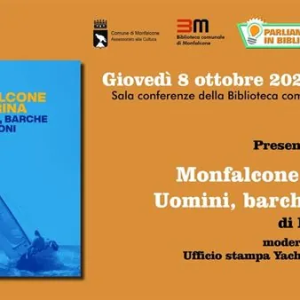

gio 8 ott · dalle 18:30
Presentazione del libro "Monfalcone il Marina. Uomini, barche e visioni"
Giovedì 8 ottobre 2026, alle ore 18:30, in Sala Conferenze della Biblioteca Comunale di Monfalcone si terrà la presentazione del libro "Monfalcone il Marina. Uomini, barche e visioni" di Roberto Covaz. Il volume racconta sessant’anni di storia di un’eccellenza internazionale…
 Indicazioni
Indicazioni
- Costi e prenotazioni
- Costo non indicato · Prenotazione non indicata
- Programma
- Programma da verificare. Apri la fonte ufficiale per orari e possibili aggiornamenti.
- In caso di maltempo
- Nessuna indicazione specifica pubblicata.
- Note
- Acquisito automaticamente dalla fonte.
L’EVENTO
Descrizione completa
Giovedì 8 ottobre 2026, alle ore 18:30, in Sala Conferenze della Biblioteca Comunale di Monfalcone si terrà la presentazione del libro "Monfalcone il Marina. Uomini, barche e visioni" di Roberto Covaz.
Il volume racconta sessant’anni di storia di un’eccellenza internazionale della vela e della marineria monfalconese: dal nome “Hannibal”, in onore di Annibale Pelaschier, al nome “Marina Monfalcone” del gruppo che fa capo alla proprietà Red Bull; dal due volte olimpionico triestino Sergio Sorrentino al due volte campione olimpico austriaco Hans-Peter Steinacher. Fondato nel 1966, e progettato dall’architetto udinese Carlo Mangani, il Marina Monfalcone si è imposto sulla scena nautica internazionale, grazie anche alla titolata scuola vela “Tito Nordio”, la prima del genere in Italia, fondata anch’essa nel 1966, e allo Yacht Club Hannibal (1976) oggi Yacht Club Monfalcone - Home of Hannibal, che nell’ultimo decennio ha organizzato le più prestigiose regate per barche d’altura e vele classiche del Mediterraneo.
Il libro vuole celebrare anche un altro traguardo importante per la vela e la nautica locale: quest'anno ricorre, infatti, il cinquantesimo compleanno dello YCM: 50 anni di sport, tradizione e passione per il mare!
A moderare l'incontro, dall'ufficio stampa dello Yacht Club Monfalcone, Stefano Bareggi.
Ingresso libero.
Lo scrittore monfalconese Roberto Covaz, grande esperto di cantieristica ed ex giornalista de “Il Piccolo”, ha al suo attivo numerosi lavori dedicati alla città di Monfalcone, alla sua storia e a personaggi di spicco del territorio. È autore, tra gli altri, di: "Amianto, i polmoni dei cantierini di Monfalcone, Le abbiamo fatte noi. Storia del cantiere e dei cantierini di Monfalcone", "Monfalcone 1918-2018", "Monfalcone, Mediterraneo. Storia del lavoro nella città delle barche”, "Alla Luna, sapori e saperi del Goriziano", "Gorizia capovolta" e "Il tesoro del Carso: vita e misteri del Pirata benefattore".
IL PROGRAMMA
Programma e orari
Appuntamenti raccolti dalle fonti elencate. Dove manca un orario, non è ancora disponibile in questa scheda.
Programma pubblicato
- Dal 2026-10-08 al 2026-10-08
INFORMAZIONI UTILI
Prima di partire
- Controllare la fonte prima di partire.
ORGANIZZAZIONE